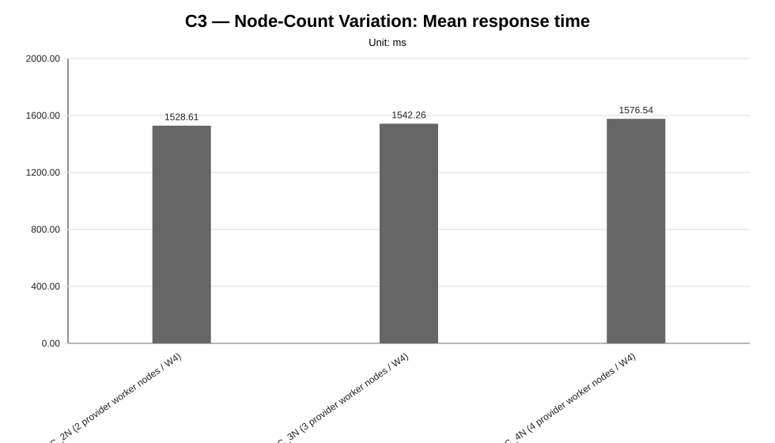
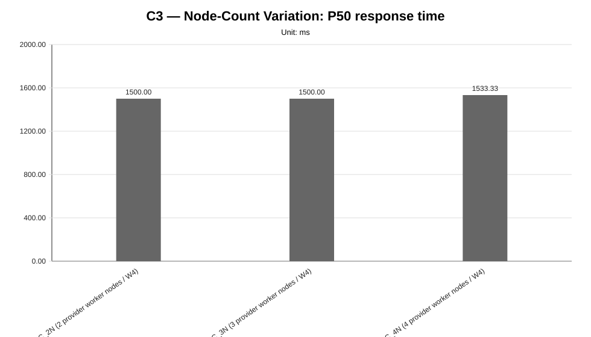
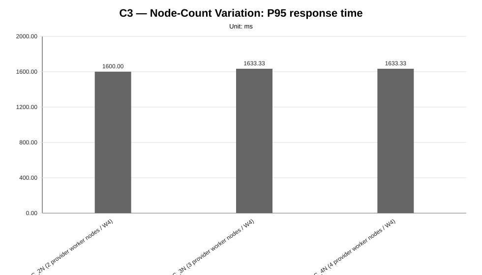
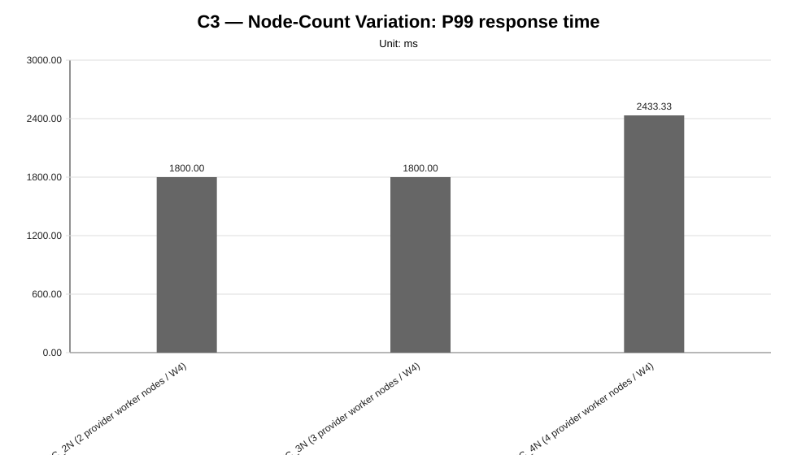
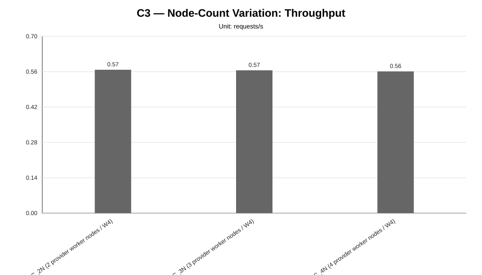
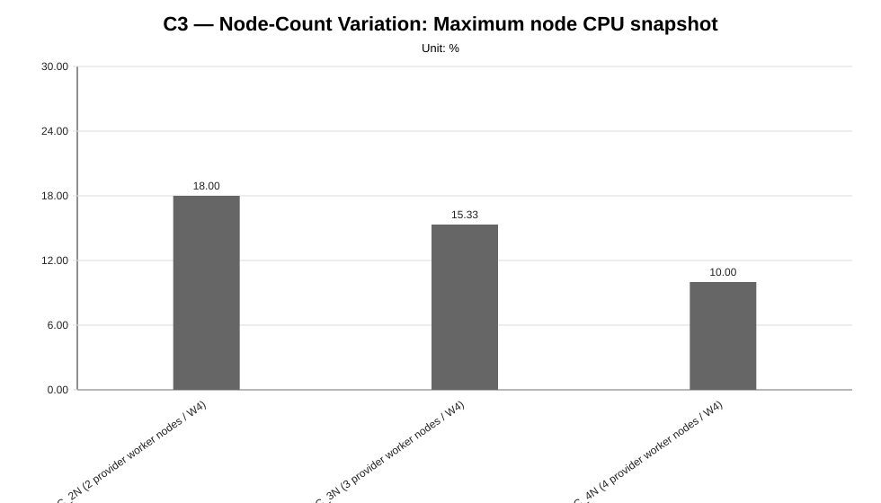
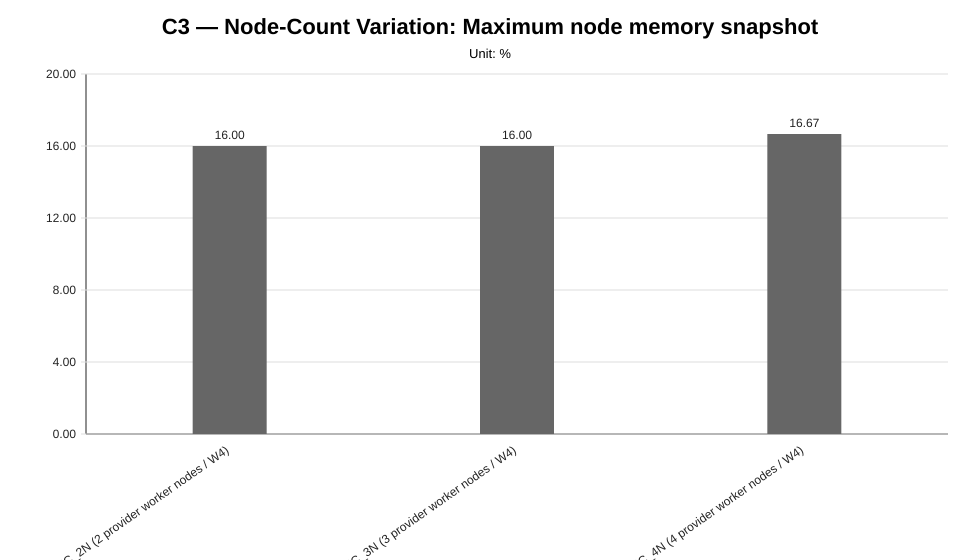
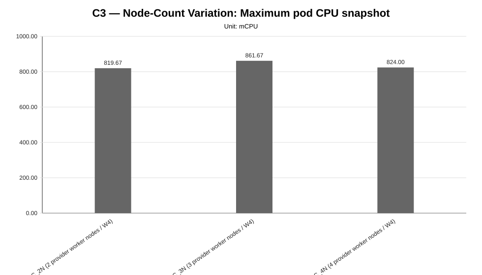
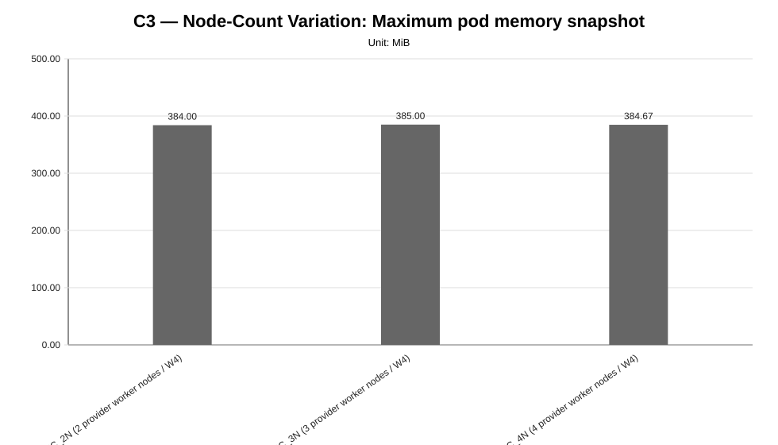

Cycle ID: C3
Reporting Profile: RP_C3_NODE_COUNT_VARIATION
Reporting ID: REP_C3_20260619T174611Z
Generated at UTC: 2026-06-19T17:46:44Z
This report compares provider worker-node-count variants under fixed LocalAI workload, model, LocalAI worker-count, per-node capacity and placement policy. It is intended to expose whether additional provider worker nodes reduce local contention, remain unused, or introduce distribution overhead.
The report combines measurement CSV data, minimal observability evidence, cluster validation outputs, application topology metadata and technical diagnosis context when those artifacts are available.
The values below describe the global baseline configuration used as a cross-cycle reference. Scenario-specific and sweep-local sections report the effective infrastructure, placement, worker count and runtime configuration used by each scenario. Percentage deltas are computed against the family-local reference scenario when one is defined for the sweep.
| Dimension | Reference value |
|---|---|
| Baseline ID | B1 |
| Model | llama-3.2-1b-instruct:q4_k_m |
| Worker count | 2 |
| Placement | colocated_genai_pb_worker_02 |
| Workload | users=2, spawnRate=1, runTime=2m |
| Prompt | Reply with only READY. |
| Request timeout | 120 s |
| Infrastructure profile | INFRA_C1_1CP_2W_8C16G |
| Placement profile | PL_COLOCATED |
The scenarios below are the sweep-local references used to interpret percentage deltas within each family. They may differ from the cross-cycle baseline when a campaign intentionally varies infrastructure, placement, latency or tenancy.
| Sweep | Reference scenario | Description | Status | Varied dimension |
|---|---|---|---|---|
| Node-Count Variation | NC_2N | NC_2N (2 provider worker nodes / W4) | measured | provider worker node count |
| Layer | Primary use | Source |
|---|---|---|
| Measurement CSV | Quantitative charts and scenario summary metrics | {"node-count-variation": "results/experimental-cycles/C3/benchmark/node-count-variation"} |
| Technical diagnosis | Interpretation, family judgments, findings, unsupported-scenario context | results/experimental-cycles/C3/diagnosis/analysis_diagnosis_all_NA_20260619T174644Z_diagnosis.json |
| Scenario configuration | Fixed/varied dimensions and scenario labels | config/scenarios/** |
| Cluster-side artifacts | CPU/memory snapshots, pod placement and event evidence | minimal observability and cluster capture artifacts |
| Reporting output | Current generated report package | results/experimental-cycles/C3/reporting |
This reporting profile uses variant-scoped infrastructure: infrastructure profiles are attached to individual scenarios rather than to one fixed cycle-level cluster shape.
| Scenario | Family | Infrastructure profile | Infrastructure profile path | Provider | Provider binding | Worker nodes | Worker vCPU/node | Worker memory/node | Lifecycle mode |
|---|---|---|---|---|---|---|---|---|---|
NC_2N | node-count-variation | INFRA_C3_1CP_2W_8C16G | config/infrastructure/profiles/INFRA_C3_1CP_2W_8C16G.json | proxmox-k3s | BINDING_INFRA_C3_1CP_2W_8C16G_PROXMOX_K3S | 2 | 8 vCPU | 16 GiB | ephemeral |
NC_3N | node-count-variation | INFRA_C3_1CP_3W_8C16G | config/infrastructure/profiles/INFRA_C3_1CP_3W_8C16G.json | proxmox-k3s | BINDING_INFRA_C3_1CP_3W_8C16G_PROXMOX_K3S | 3 | 8 vCPU | 16 GiB | ephemeral |
NC_4N | node-count-variation | INFRA_C3_1CP_4W_8C16G | config/infrastructure/profiles/INFRA_C3_1CP_4W_8C16G.json | proxmox-k3s | BINDING_INFRA_C3_1CP_4W_8C16G_PROXMOX_K3S | 4 | 8 vCPU | 16 GiB | ephemeral |
This campaign may resolve provider configuration at scenario or variant level. The table below exposes provider bindings and concrete configuration paths per scenario whenever available.
| Scenario | Family | Provider | Provider binding | Provider binding path | Example config | Local config | Kubeconfig |
|---|---|---|---|---|---|---|---|
NC_2N | node-count-variation | proxmox-k3s | BINDING_INFRA_C3_1CP_2W_8C16G_PROXMOX_K3S | config/infrastructure/providers/proxmox-k3s/bindings/BINDING_INFRA_C3_1CP_2W_8C16G_PROXMOX_K3S.json | config/infrastructure/providers/proxmox-k3s/examples/cluster.c3-1cp-2w-8c16g.example.yaml | config/infrastructure/providers/proxmox-k3s/local/cluster.c3-1cp-2w-8c16g.local.yaml | config/cluster-access/generated/proxmox-k3s/c3-1cp-2w-8c16g/kubeconfig |
NC_3N | node-count-variation | proxmox-k3s | BINDING_INFRA_C3_1CP_3W_8C16G_PROXMOX_K3S | config/infrastructure/providers/proxmox-k3s/bindings/BINDING_INFRA_C3_1CP_3W_8C16G_PROXMOX_K3S.json | config/infrastructure/providers/proxmox-k3s/examples/cluster.c3-1cp-3w-8c16g.example.yaml | config/infrastructure/providers/proxmox-k3s/local/cluster.c3-1cp-3w-8c16g.local.yaml | config/cluster-access/generated/proxmox-k3s/c3-1cp-3w-8c16g/kubeconfig |
NC_4N | node-count-variation | proxmox-k3s | BINDING_INFRA_C3_1CP_4W_8C16G_PROXMOX_K3S | config/infrastructure/providers/proxmox-k3s/bindings/BINDING_INFRA_C3_1CP_4W_8C16G_PROXMOX_K3S.json | config/infrastructure/providers/proxmox-k3s/examples/cluster.c3-1cp-4w-8c16g.example.yaml | config/infrastructure/providers/proxmox-k3s/local/cluster.c3-1cp-4w-8c16g.local.yaml | config/cluster-access/generated/proxmox-k3s/c3-1cp-4w-8c16g/kubeconfig |
| Item | Value |
|---|---|
| Validation profile | CV_PROVIDER_BACKED_VALIDATION_TEMPLATE |
| Profile file | config/cluster-validation/templates/CV_PROVIDER_BACKED_VALIDATION_TEMPLATE.json |
| Latest manifest | variant-scoped validation manifests (3 available) |
| Current status | variant-scoped validation available (3/3 validated) |
| Variant validation statuses | validated=3 |
| Latest raw validation | variant-scoped validation evidence is recorded in the campaign execution manifest and generated runtime profiles under results/experimental-cycles/C3/execution/generated-runtime-configs |
| Accepted provisioning statuses | completed |
| Required kubeconfig status | verified |
| Artifact root | results/experimental-cycles/C3/execution/generated-runtime-configs |
This table links each scenario to the runtime-generated profiles used for precheck, application deployment and minimal observability evidence.
| Scenario | Family | Precheck profile | Precheck profile path | Application deployment profile | Application deployment profile path | Minimal observability profile | Minimal observability profile path | Cluster validation evidence |
|---|---|---|---|---|---|---|---|---|
NC_2N | node-count-variation | TC_C3_NC_2N | results/experimental-cycles/C3/execution/generated-runtime-configs/NC_2N/TC_NC_2N.json | AD_C3_NC_2N | results/experimental-cycles/C3/execution/generated-runtime-configs/NC_2N/AD_NC_2N.json | MO_C3_NC_2N | results/experimental-cycles/C3/execution/generated-runtime-configs/NC_2N/MO_NC_2N.json | results/experimental-cycles/C3/variants/NC_2N/infrastructure/validation/latest-cluster-validation-manifest.json (validated) |
NC_3N | node-count-variation | TC_C3_NC_3N | results/experimental-cycles/C3/execution/generated-runtime-configs/NC_3N/TC_NC_3N.json | AD_C3_NC_3N | results/experimental-cycles/C3/execution/generated-runtime-configs/NC_3N/AD_NC_3N.json | MO_C3_NC_3N | results/experimental-cycles/C3/execution/generated-runtime-configs/NC_3N/MO_NC_3N.json | results/experimental-cycles/C3/variants/NC_3N/infrastructure/validation/latest-cluster-validation-manifest.json (validated) |
NC_4N | node-count-variation | TC_C3_NC_4N | results/experimental-cycles/C3/execution/generated-runtime-configs/NC_4N/TC_NC_4N.json | AD_C3_NC_4N | results/experimental-cycles/C3/execution/generated-runtime-configs/NC_4N/AD_NC_4N.json | MO_C3_NC_4N | results/experimental-cycles/C3/execution/generated-runtime-configs/NC_4N/MO_NC_4N.json | results/experimental-cycles/C3/variants/NC_4N/infrastructure/validation/latest-cluster-validation-manifest.json (validated) |
This campaign may vary placement, tenancy, latency profile or generated deployment profiles at scenario level. The table below exposes the scenario-level application topology used by each configured variant.
| Scenario | Family | Placement profile | Placement type | Topology dir | Server manifest | Worker count | Active RPC workers | Expected server node | Expected worker nodes | Latency profile | Tenancy profile | Generated deployment profile |
|---|---|---|---|---|---|---|---|---|---|---|---|---|
NC_2N | node-count-variation | PL_SPREAD_WORKERS | spread_workers_across_2_provider_worker_nodes | infra/k8s/compositions/topology/spread-genai-pb-2-worker-nodes-w4 | infra/k8s/compositions/server/models/m1-provider-backed | 4 | localai-rpc-a, localai-rpc-b, localai-rpc-c, localai-rpc-d | genai-pb-worker-02 | localai-rpc-a=genai-pb-worker-01, localai-rpc-b=genai-pb-worker-02, localai-rpc-c=genai-pb-worker-01, localai-rpc-d=genai-pb-worker-02 | not_applicable | not_declared | results/experimental-cycles/C3/execution/generated-runtime-configs/NC_2N/AD_NC_2N.json |
NC_3N | node-count-variation | PL_SPREAD_WORKERS | spread_workers_across_3_provider_worker_nodes | infra/k8s/compositions/topology/spread-genai-pb-3-worker-nodes-w4 | infra/k8s/compositions/server/models/m1-provider-backed | 4 | localai-rpc-a, localai-rpc-b, localai-rpc-c, localai-rpc-d | genai-pb-worker-02 | localai-rpc-a=genai-pb-worker-01, localai-rpc-b=genai-pb-worker-02, localai-rpc-c=genai-pb-worker-03, localai-rpc-d=genai-pb-worker-01 | not_applicable | not_declared | results/experimental-cycles/C3/execution/generated-runtime-configs/NC_3N/AD_NC_3N.json |
NC_4N | node-count-variation | PL_SPREAD_WORKERS | spread_workers_across_4_provider_worker_nodes | infra/k8s/compositions/topology/spread-genai-pb-4-worker-nodes-w4 | infra/k8s/compositions/server/models/m1-provider-backed | 4 | localai-rpc-a, localai-rpc-b, localai-rpc-c, localai-rpc-d | genai-pb-worker-02 | localai-rpc-a=genai-pb-worker-01, localai-rpc-b=genai-pb-worker-02, localai-rpc-c=genai-pb-worker-03, localai-rpc-d=genai-pb-worker-04 | not_applicable | not_declared | results/experimental-cycles/C3/execution/generated-runtime-configs/NC_4N/AD_NC_4N.json |
The following table summarizes the currently available measurement and constraint evidence for all configured reporting families.
| Family | Scenario | Status | Samples | Mean ms | P95 ms | RPS | Unsupported evidence |
|---|---|---|---|---|---|---|---|
| node-count-variation | NC_2N | measured | 3 | 1528.61 | 1600.00 | 0.5677 | NA |
| node-count-variation | NC_3N | measured | 3 | 1542.26 | 1633.33 | 0.5655 | NA |
| node-count-variation | NC_4N | measured | 3 | 1576.54 | 1633.33 | 0.5611 | NA |
The reporting generator first uses minimal observability metrics when available; missing values are filled from scenario-summary aggregates derived from benchmark CSV files and cluster-capture artifacts whenever possible. Values marked as not_available were not derivable from the available artifact set and are intentionally distinguished from measured zero values.
| Metric | Value | Source |
|---|---|---|
| request_count | 66.6667 | scenario summary aggregation fallback |
| success_rate_percent | 100.0 | scenario summary aggregation fallback |
| failure_count | 0 | scenario summary aggregation fallback |
| mean_response_time_ms | 1549.1354 | scenario summary aggregation fallback |
| p50_response_time_ms | 1511.1111 | scenario summary aggregation fallback |
| p95_response_time_ms | 1622.2222 | scenario summary aggregation fallback |
| p99_response_time_ms | 2011.1111 | scenario summary aggregation fallback |
| throughput_rps | 0.5648 | scenario summary aggregation fallback |
| max_node_cpu_percent | 14.4444 | scenario summary aggregation fallback |
| max_node_memory_percent | 16.2222 | scenario summary aggregation fallback |
| max_pod_cpu_millicores | 835.1111 | scenario summary aggregation fallback |
| max_pod_memory_mib | 384.5556 | scenario summary aggregation fallback |
| pod_restart_count | 0 | scenario summary aggregation fallback |
| pending_pods_count | 0 | scenario summary aggregation fallback |
| failed_pods_count | 0 | scenario summary aggregation fallback |
| not_ready_pods_count | 0 | scenario summary aggregation fallback |
| kubernetes_events_count | 39 | scenario summary aggregation fallback |
| kubernetes_warning_events_count | 0.3333 | scenario summary aggregation fallback |
| Family | Scenario | Status | Evidence | Source |
|---|---|---|---|---|
| all | NA | not_applicable | No unsupported or missing scenario evidence detected in the current reporting inputs. | NA |
| Family | Finding | Status | Confidence | Implication |
|---|---|---|---|---|
| node-count-variation | The node-count variation family provides comparable infrastructure-size evidence. | comparative_signal_available | medium | The campaign can be used to reason about whether adding provider worker nodes improves distribution and performance, or introduces overhead, while per-node capacity and application-level dimensions remain fixed. |
| node-count-variation | The node-count campaign provides measured evidence across multiple infrastructure sizes. | NA | medium | The evidence can be used to evaluate whether additional provider worker nodes reduce LocalAI contention, introduce communication overhead, or remain unused by the fixed application topology. |
| node-count-variation | The node-count campaign identifies the lowest-latency infrastructure worker-node count among measured variants. | NA | medium | This result provides a controlled signal for the node-count dimension under fixed model, workload, LocalAI worker count, per-node resources and placement policy. |
| baseline | Minimum end-to-end validation is available as a functional reliability baseline. | NA | high | The benchmark pipeline starts from a verified functional baseline rather than from a purely theoretical setup. |
The global report below provides the stakeholder-facing overview. Each sweep also has a dedicated report for focused inspection of one varied dimension.
| Sweep | Dedicated HTML report | Execution status | Coverage | Varied dimension |
|---|---|---|---|---|
| Node-Count Variation | node-count-variation | fully_measured | measured=3, unsupported=0, missing=0 | provider worker node count |
| Family | Scenarios | Observed | Measured | Unsupported | Samples |
|---|---|---|---|---|---|
| node-count-variation | 3 | 3 | 3 | 0 | 9 |
Execution status: fully_measured
Execution note: All configured scenarios in this sweep have measured benchmark samples.
Varied dimension: provider worker node count
Fixed dimensions: model=M1, LocalAI worker-count=W4, placement=PL_SPREAD_WORKERS, workload=WL2, worker node capacity=8 vCPU / 16 GiB.
Reference scenario within the sweep: NC_2N
| Scenario count | Measured | Unsupported | Missing |
|---|---|---|---|
| 3 | 3 | 0 | 0 |
This table is derived from resolved scenario metadata. A parameter is marked as controlled only when it has the same effective value across all scenarios in the sweep.
| Parameter | Resolved value | Interpretation |
|---|---|---|
| Model | llama-3.2-1b-instruct:q4_k_m | controlled |
| Worker count | 4 | controlled |
| Placement | varies across scenarios (3 values) | varied or scenario-specific |
| Workload | users=2, spawnRate=1, runTime=2m | controlled |
| Topology | varies across scenarios (3 values) | varied or scenario-specific |
| Server manifest | infra/k8s/compositions/server/models/m1-provider-backed | controlled |
| Prompt | Reply with only READY. | controlled |
| Temperature | 0.1 | controlled |
| Request timeout (s) | 120 | controlled |
| Scenario | Status | Varied value (provider worker node count) | Model | Worker count | Placement | Workload | Timeout (s) |
|---|---|---|---|---|---|---|---|
NC_2N | measured | 2 provider worker nodes / W4 | llama-3.2-1b-instruct:q4_k_m | 4 | spread_workers_across_2_provider_worker_nodes | users=2, spawnRate=1, runTime=2m | 120 |
NC_3N | measured | 3 provider worker nodes / W4 | llama-3.2-1b-instruct:q4_k_m | 4 | spread_workers_across_3_provider_worker_nodes | users=2, spawnRate=1, runTime=2m | 120 |
NC_4N | measured | 4 provider worker nodes / W4 | llama-3.2-1b-instruct:q4_k_m | 4 | spread_workers_across_4_provider_worker_nodes | users=2, spawnRate=1, runTime=2m | 120 |
This compact table reports the core indicators used to read the sweep at a glance. Detailed percentiles, deltas and resource snapshots are reported in the following extended table.
| Scenario | Description | Status | Sample count | Mean response time (ms) | P95 response time (ms) | Throughput (requests/s) | Unsupported evidence |
|---|---|---|---|---|---|---|---|
NC_2N | NC_2N (2 provider worker nodes / W4) | measured | 3 | 1528.61 | 1600.00 | 0.5677 | |
NC_3N | NC_3N (3 provider worker nodes / W4) | measured | 3 | 1542.26 | 1633.33 | 0.5655 | |
NC_4N | NC_4N (4 provider worker nodes / W4) | measured | 3 | 1576.54 | 1633.33 | 0.5611 |
This secondary table keeps the additional metrics aligned with the technical diagnosis while avoiding an excessively wide primary summary table.
| Scenario | P50 response time (ms) | P99 response time (ms) | Mean response time delta (%) | P95 response time delta (%) | Throughput delta (%) | Max node CPU snapshot (%) | Max node memory snapshot (%) | Max pod CPU snapshot (mCPU) | Max pod memory snapshot (MiB) |
|---|---|---|---|---|---|---|---|---|---|
NC_2N | 1500.00 | 1800.00 | 0.00 | 0.00 | 0.00 | 18.00 | 16.00 | 819.67 | 384.00 |
NC_3N | 1500.00 | 1800.00 | 0.89 | 2.08 | -0.39 | 15.33 | 16.00 | 861.67 | 385.00 |
NC_4N | 1533.33 | 2433.33 | 3.13 | 2.08 | -1.16 | 10.00 | 16.67 | 824.00 | 384.67 |
This table makes the infrastructure dimension explicit. The LocalAI worker count, per-node capacity and placement policy are kept fixed while the number of provider worker nodes changes.
| Scenario | Provider worker nodes | LocalAI RPC workers | Per-node capacity | Topology | Observed placement nodes |
|---|---|---|---|---|---|
NC_2N | 2 | 4 | 8 vCPU / 16 GiB | infra/k8s/compositions/topology/spread-genai-pb-2-worker-nodes-w4 | genai-pb-worker-01, genai-pb-worker-02 |
NC_3N | 3 | 4 | 8 vCPU / 16 GiB | infra/k8s/compositions/topology/spread-genai-pb-3-worker-nodes-w4 | genai-pb-worker-01, genai-pb-worker-02, genai-pb-worker-03 |
NC_4N | 4 | 4 | 8 vCPU / 16 GiB | infra/k8s/compositions/topology/spread-genai-pb-4-worker-nodes-w4 | genai-pb-worker-01, genai-pb-worker-02, genai-pb-worker-03, genai-pb-worker-04 |
comparative_signal_available, confidence: medium).medium).medium).








not_executed sweep means that neither measurement CSV files nor unsupported-scenario evidence were found for any configured scenario in that family.Only provider worker-node count is varied in this campaign; model, workload, LocalAI worker-count, per-node capacity and placement policy remain fixed.
The fixed W4 application topology is spread over the available provider worker nodes so the infrastructure-size dimension can produce observable distribution differences.
If fewer than two node-count variants are measured, the report must present the campaign as insufficient comparative evidence while preserving unsupported variants as capacity or scheduling evidence.